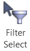
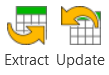

Core Features
BIMrx Core has two main features:
1) A command for selecting model elements based on Revit native Rule Based Filters.

2) A pair of commands for exchanging data of selected elements with Excel.

Feature 1 - Using Revit Rule Based Filters to Select Objects
- Create and manage Rule Base Filters in Revit.
- Click the Select button from BIMrx tab >> BIMrx Core panel.
- Choose the filters you would like to add to the selection.
- Decide whether to select elements from the current view, or from the whole model.
Feature 2 - Update Parameter Data Using Excel
- Select elements in Revit (optionally using the filter selection above).
- Click the Extract button from BIMrx tab >> BIMrx Core panel.
- Select the settings for your export in the Export Settings dialog and click the Export button.
- In the current implementation you can only choose the output format to be either One Tab per Family or One Tab per Category.
- The other options shown and marked with * will be available in future versions.
- Choose a location and file name for the Excel File that will be saved.
- Make changes in Excel, but don’t change the gray/blue read-only columns.
- Save your changes. It is okay to leave Excel open.
- Click the Update button from BIMrx tab >> BIMrx Core panel.
- Select the modified Excel file.
- The import will occur, and any errors will be saved in a separate Excel file.
Created with the Personal Edition of HelpNDoc: Produce Kindle eBooks easily